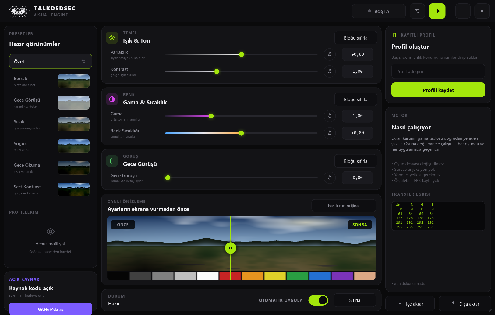

Five sliders — brightness, contrast, gamma, temperature and night vision — compiled into a gamma ramp and written straight to the display adapter. Games, video, the desktop: everything the panel shows goes through it.

Nothing is copied into a game folder, no process is opened, no library is injected and no driver is installed. The ramp is the same knob a monitor calibration profile turns, which is why it needs no administrator rights and costs exactly zero frame time — the correction happens in the display pipeline, not in your game.
Saturation and hue are deliberately absent. A gamma ramp is one curve per channel and cannot mix channels, so no honest implementation exists on this path. A dead slider is worse than a missing one.
Gamma ramps outlive the process that set them. Every display's original ramp is read at startup and put back on exit — also when the window goes to the tray, or the effect is switched off.
Windows rejects ramps that stray too far from linear. Rather than fail, the engine walks the setting down — 100%, 85%, 70% — until the driver accepts one, then says in the status bar how much survived.
| Control | Range | Neutral | What it does |
|---|---|---|---|
| Brightness | −0.35 … +0.35 | 0.00 | Shifts the whole curve up or down |
| Contrast | 0.60 … 1.80 | 1.00 | Opens the gap between shadow and highlight, pivoting on mid grey |
| Gamma | 0.50 … 2.20 | 1.00 | Reweights the midtones while both ends stay pinned |
| Temperature | −1.00 … +1.00 | 0.00 | Warm or cool, by separating red from blue |
| Night vision | 0.00 … 1.00 | 0.00 | Lifts shadow detail out of the black without washing out highlights |
Every value box is editable — type 1.35, press Enter.
Sliders take the keyboard too: ← → move by a hundredth of the range,
Home and End pin the ends.
Each of the 256 input levels is pushed through five stages in a fixed order, producing a
256-entry table per channel that goes to SetDeviceGammaRamp on every attached
display.
The maths is held down by unit tests, not by hope: the neutral setting must reproduce the identity ramp exactly, every curve must stay monotonic, contrast must pivot on mid grey, gamma must leave black and white untouched, and night vision must lift shadows at least ten times more than highlights.
scoop bucket add tlk https://github.com/Talkdedsec/scoop-tlk
scoop install tlk/tlk-visualDownload talkdedsec-visual.exe
from the Releases page and run it.SmartScreen will warn you the first time. The binary is not code-signed yet. Every release ships a SHA-256 file, and every release after v0.1.0 carries a GitHub build attestation you can check yourself:
gh attestation verify talkdedsec-visual.exe --owner TalkdedsecWindows 10 or 11, 64-bit. One file — no installer, no .NET, no WebView2,
no runtime of any kind. Settings and profiles live in a single file under
%APPDATA%.